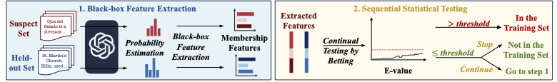

Practical Identification of Training Datasets in Large Language Models
Under Review · NeurIPS 2026
Abstract
This research aims to develop a practical black-box Dataset Inference method for determining whether an LLM was trained on a suspect dataset by estimating per-token probabilities from label-only generated outputs, avoiding the need for gray-box probability access. It also replaces rigid p-value testing with e-value–based sequential testing, enabling anytime-valid and adaptive evidence accumulation as more samples are queried. Together, these methodological advances allow dataset inference to be applied to real-world LLM APIs under fully black-box access.